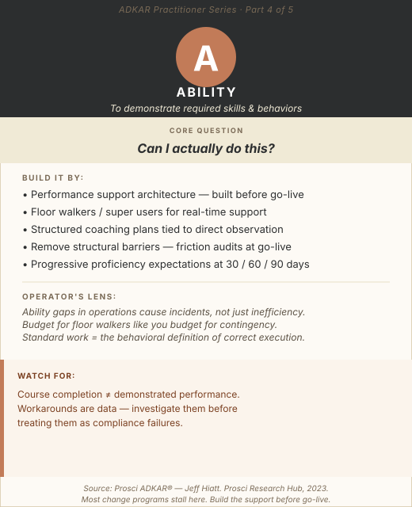

The Scrum team from Parts 2 and 3 wanted Scrum to work and had been trained on the framework and their roles. Knowing the roles and performing them under a live backlog with live stakeholders were different things, and nobody on the team, including the Product Owner, had done it before.
I coached through every stand-up and ceremony, reminded people of their roles in the moment, and held private conversations with the individuals who were struggling. The turning point was the Product Owner, who had no Scrum background and did not understand the role. His list of responsibilities was the longest in the deck, twelve of them, from the product vision and roadmap to backlog grooming and stakeholder expectations. I coached him to dedicate a resource from his team to every ceremony and to the work outside them: backlog grooming, priority setting and stakeholder communication. Once the Product Owner functioned, the team functioned, and it was in rhythm within a few weeks.
Prosci describes this stage in one line: "There's often a gap between knowing how to do something and being able to do it effectively." Many programs find that gap after go-live. Training is complete, the curriculum was role-specific, the comprehension checks looked good, and go-live is green. Two months later, the project sponsor is asking why 40% of the team is still running the old process.
Ability gaps don't show up before go-live. They appear after it, in production, where the cost of getting them wrong is no longer theoretical. Understanding why they form, and how to prevent them, is the work this article covers.
Foundation
What Ability Is
Knowledge tells a person what to do and how to do it in theory. Ability is whether they can do it in their own work, under live conditions, with production stakes.
People can understand a process perfectly in a training session and still struggle to execute it while they manage their regular workload, work in a live system that behaves differently than the sandbox, handle an unexpected edge case, and work without the trainer next to them. Prosci adds that "not everyone learns the same way or at the same pace."
That gap comes from the difference between learning conditions and working conditions, and every kind of skill-building produces it. Change programs that expect full proficiency at go-live are being unrealistic, and they create a performance trough that undermines confidence in the change when it matters most.
Prosci's prescription is that "after training, organizations need to help people demonstrate desired behaviors through coaching, practice time and feedback." Ability is built through that practice and feedback, and through removing the barriers between the person and the new behavior. A training event cannot compress it, and a completion certificate does not prove it.

ADKAR Practitioner Series, Part 4: Ability. The step from the training room to the production floor.
Diagnosis
How to Confirm an Ability Barrier Point
From a distance an Ability barrier can look like a Desire problem: people appear to be avoiding the new process, reverting to old behaviors or finding workarounds. The distinguishing question: does the person want to perform the new behavior but struggle to do it consistently under live conditions?
Ability Gap Signals
- Performance varies widely across individuals who received the same training
- Errors are concentrated in the first few weeks after go-live and gradually decreasing, the shape of a learning curve
- People are following the spirit of the new process but making procedural errors in execution
- Workarounds compensate for specific friction points in the new process, and people are not using them to avoid the change
- People report feeling "not confident enough yet" rather than "I don't want to do this"
- Help desk or supervisor question volume is high and concentrated on specific process steps
The Ability diagnostic needs observation as well as conversation. Ask someone to execute a live task in the new process while you watch. The difference between their description of the process and their execution of it shows you where Ability development is needed.
Program Design
Eight Blueprints for Building Ability
The Performance Support Architecture (Build It Before Go-Live)
The most valuable Ability investment happens before go-live: designing the performance support that will be in place when the team needs help in production. Most change programs build training, and fewer build the support system that turns training into performance.
A performance support architecture includes:
- Who to call. A named point of contact by function for process and system questions, beyond "the help desk."
- Where to find guidance. The microlearning library, job aids and escalation path, reachable in 30 seconds instead of buried in an intranet.
- Who is physically or virtually present. Floor walkers or super users assigned to specific teams for the first weeks after go-live.
- What to do when the exception happens. Documented exception handling paths for the top 10 scenarios anticipated as go-live risks.
- The escalation protocol. For issues that can't be resolved at the team level, a clear path with response SLAs.
Designing this architecture 4 to 6 weeks before go-live, instead of scrambling to build it after the first wave of incidents, is one of the highest-leverage things a change practitioner can do.
The Floor-Walker and Super User Model
Floor walkers are dedicated support people, often volunteers from the affected workforce who are recognized and compensated for the extra role. They are physically or virtually present during the first weeks after go-live to give hands-on support as problems come up. The model works because the support arrives at the moment it is needed, in the workflow where the problem is happening, and the immediate feedback turns what people learned in training into practiced performance.
A reasonable starting point for a high-complexity change is about one floor walker per 15 to 20 users in the first two weeks after go-live, adjusted for the complexity of the change and the spread of the sites. Design considerations:
- Selection: Credible peers rather than project team members. An experienced operator with recognized expertise is more effective than a project analyst who knows the system from the outside.
- Preparation: Floor walkers need deeper training than the general population, because they must handle edge cases and escalate appropriately.
- Duration: Typically 2 to 4 weeks of intensive presence, tapering to on-call availability.
- Feedback loop: Floor walkers are the best source of current information on where Ability gaps are concentrated, so build a structured daily debrief into the model.
Coaching Plans Tied to Direct Observation
People managers are the most consistent source of Ability support available, if they know what to do. Generic direction ("support your team through the transition") produces generic behavior, and structured coaching plans produce targeted development.
A coaching plan for the Ability phase gives managers four things:
- a behavioral observation guide: the specific new behaviors to look for, and what correct execution looks like
- a framework for a coaching conversation, as opposed to discipline, when they observe an error
- a cadence: daily in week one, weekly in weeks three through six
- an escalation protocol for when a person is still struggling despite coaching
Prosci's CLARC roles for people managers (Communicator, Liaison, Advocate, Resistance Manager and Coach) put coaching in the people manager's accountability. Prosci defines the Coach role as providing "training, information and support employees need to adopt and use a change," and the Ability phase is where that role matters most. On the Scrum team, that coaching was my job as Scrum Master, in every ceremony and in private conversations with the people who were struggling.
Ability Sprints
For complex changes where the full set of new capabilities cannot be built at once, Ability sprints give a structure for building proficiency step by step.
An Ability sprint is a time-boxed cycle (typically one to two weeks) focused on mastering a specific behavior or process segment. Each sprint has:
- a clear definition of what competent execution looks like
- daily practice scenarios or live reps with coached feedback
- a defined measure of proficiency, for example "executes this step without guidance 80% of the time by the end of the sprint"
- a retrospective on what worked and what moves into the next sprint
Sprints make Ability development manageable and measurable, because a daunting new capability becomes a series of visible, achievable milestones. They also normalize the learning curve: people who struggle with the full complexity of a new process often succeed one sprint at a time, and their confidence grows with each one.
Shadowing and Reverse Shadowing
Shadowing is a classic apprenticeship method, and it is especially useful in process-intensive environments.
Standard shadowing: The learner observes an experienced performer (ideally someone from an early-adopter cohort, or a super user) executing the new process in a live environment, and asks questions throughout. The goal is to see the process in context, with the informal decision-making, exception handling and situational judgment a formal curriculum rarely captures.
Reverse shadowing: The learner performs the task while the experienced performer observes and gives guidance and feedback as it happens. The learner narrates their thinking where possible ("I'm doing X because Y"), which exposes the difference between what they think they are doing and what they are doing.
Run together over two or three sessions, the two speed up Ability development compared with unsupported practice. In operations, where the work looks different from the training scenario, this grounding in live context is often the fastest path from Knowledge to Ability.
Progressive Proficiency Expectations
One of the most damaging signals a change program can send is the unstated expectation that everyone will be fully proficient at go-live. It creates anxiety, encourages workarounds (people would rather do the old process right than the new process wrong), and hides the true Ability gap because people hide their struggles.
Define and communicate explicit proficiency milestones:
| Milestone | Expectation |
|---|---|
| Day 1 | Execute core process steps with minimal errors, with support available. Edge cases should be escalated. |
| Day 30 | Handle standard cases independently. Exception handling is still developing. |
| Day 60 | Fully independent on standard cases and handling most exceptions. Check-ins on specific areas. |
| Day 90 | Full proficiency expected. Ongoing support available for outlier scenarios. |
Communicating these milestones removes the anxiety of an unrealistic day-one standard, gives managers clear development targets to coach toward, and shows that the organization knows Ability takes time and has planned for it.
Barrier Removal as Core Ability Work
Sometimes employees cannot perform the new behavior because the environment makes it difficult or impossible, and their knowledge and motivation are fine. Common structural barriers to Ability:
A post-go-live friction audit, walking through the process with a representative frontline employee in the first week, surfaces these barriers quickly and gives the change team a high-value to-do list. Many of these barriers are quick to fix, and each one left in place delays adoption.
Performance Dashboards for Coaching Conversations
Ability development works best when it is targeted, so that coaches and managers can see where each person or team is struggling instead of applying generic support to everyone.
Performance dashboards built around the key new-process behaviors give managers the coaching data they need:
- process compliance: are people using the new templates, system workflows and approval paths?
- error or rework rates on key process steps: where are errors concentrated after go-live?
- volume trends: is adoption improving week over week, or has it flattened?
Use these dashboards for coaching, and keep them from becoming surveillance. When a manager sees that one team member's error rate on a specific step is not improving as fast as their peers', that is a signal for a targeted coaching conversation rather than a performance management action. The goal is to make Ability development visible enough that support goes where it is needed. On the Scrum team, I tracked the team's story point velocity in Jira.
The Operator's Lens
Ability gaps in operations cost more than productivity. In an office environment, an Ability gap produces inefficiency. In operations, it can produce safety incidents, regulatory noncompliance, customer escalations and SLA failures. Budget for the Ability phase (floor walkers, coaching plans, extended support) as seriously as you budget for equipment or contingency, because inadequate Ability support usually costs far more than building it well.
Shift-based operations need explicit shift coverage in the support design. A floor-walker program that covers the day shift does not help the night-shift operator who hits an exception at 2 AM. Design the Ability support for every shift, site and geography. If the go-live support plan depends on a project team member being available and the project team works 9 to 5, the coverage gap will surface within days.
Standard work belongs in the Ability phase. Lean practitioners use standard work as both a training artifact and a performance standard. In ADKAR terms, a well-designed standard work document for the new process defines correct execution, the reference for observation, coaching and self-assessment. A change program that produces training materials without standard work documents gives the Ability phase no baseline. Build the standard work, post it where people can see it, and refer to it in coaching conversations.
Common Traps
Mistakes to Avoid
Declaring success at training completion.
Training is the prerequisite for Ability. Measure demonstrated performance, because a course completion only shows the training happened.
Building the support system after go-live incidents.
Floor walkers and performance support should be in place on day one. Building them in response to the first week's problem reports means the first week went unmanaged.
Setting day-one proficiency expectations at 100%.
This encourages people to hide their struggles instead of raising them, and it penalizes the candor about gaps that coaching depends on.
Treating workarounds as compliance failures.
A workaround usually tells you something important: the new process has a structural barrier, or there is a specific Knowledge or Ability gap in a narrow area. Investigate the workaround before treating it as resistance.
Who coached you through the first weeks of a new process, and what did they do that the training didn't?
Source references: Prosci, The Prosci ADKAR® Model for Organizational Change Success (eBook): the gap between knowing how and doing it, coaching, practice time and feedback. Prosci, "CLARC: The Role of People Managers in Change Management" (prosci.com blog): the five people manager roles and the Coach definition. Umbrex: Prosci ADKAR Model frameworks. Afiniti Change Management practitioner guides.